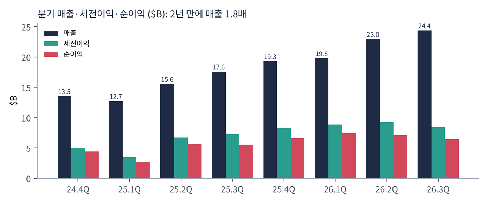
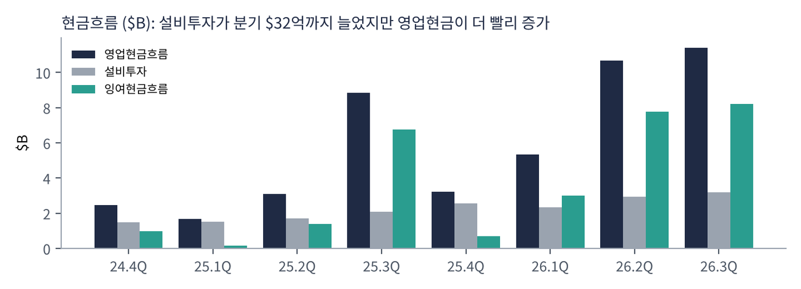
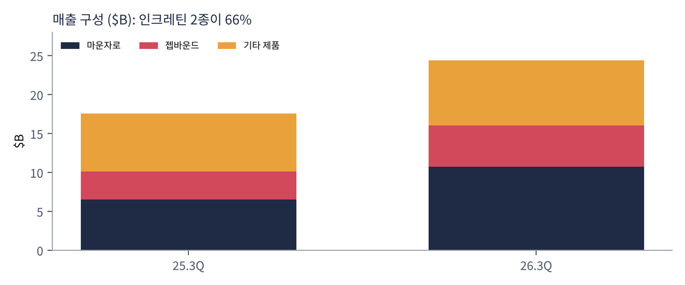
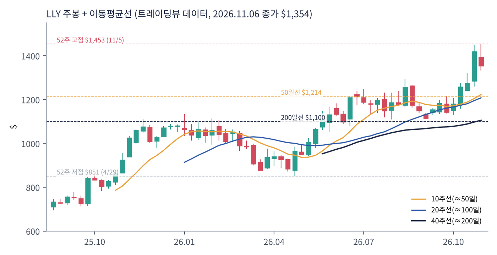
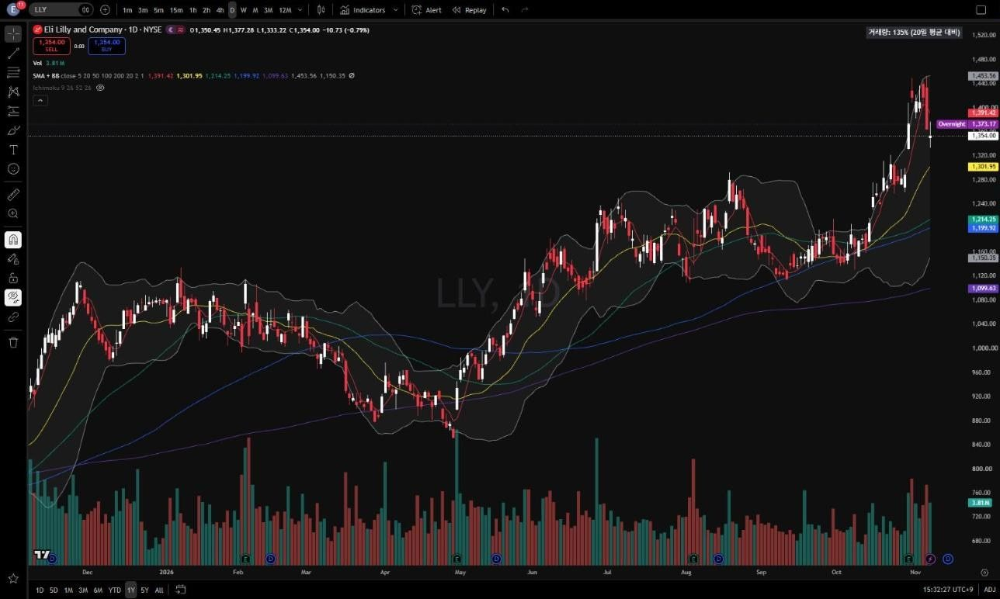
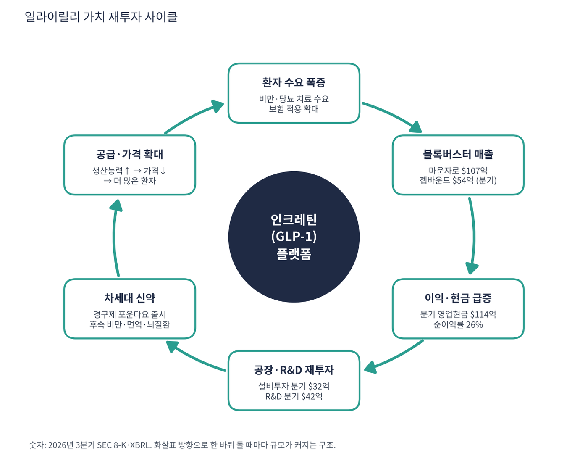

일라이릴리는 미국 인디애나폴리스에 본사를 둔 150년 된 제약회사다. 지금은 세계에서 가장 비싼 제약회사(시가총액 약 $1.27조)인데, 이유는 하나다. 비만·당뇨 치료제 '마운자로'(당뇨)와 '젭바운드'(비만)가 역사상 가장 빠르게 팔리는 약이 됐기 때문이다. 두 약은 같은 성분(티르제파타이드)이며, 식욕과 혈당을 조절하는 장 호르몬(GLP-1·GIP)을 흉내 내는 '인크레틴' 계열이다.
| 항목 | 내용 |
|---|---|
| 종목 | Eli Lilly and Company (LLY) · NYSE · 1876년 설립 · 인디애나폴리스 |
| 시가총액 | 약 $1조 2,740억 · PER 44.5배 · 배당수익률 0.49% (트레이딩뷰, 11/6 종가 $1,354) |
| 최근 분기(26.3Q) | 매출 $244억(+39%), 순이익 $65억, 영업현금 $114억 |
| 2026년 가이던스 | 매출 $910~920억(기존 $850~870억에서 상향), 비GAAP EPS $35~36 |
| 주력 분야 | 당뇨·비만(인크레틴), 종양(재이피르카), 면역(옴보·엡글리스), 뇌질환(키순라 — 알츠하이머) |
| 직책 | 인물 | 역할·특징 |
|---|---|---|
| 회장 겸 CEO | 데이비드 A. 릭스 | 2017년 CEO 취임. 영업·해외사업 출신. 비만약 시장을 '공급이 수요를 못 따라가는 시장'으로 보고 공장 투자를 먼저 밀어붙인 인물 |
| CFO | 루카스 몽타르스 | 2024년 취임. 가이던스 상향·자사주 매입과 대규모 설비투자의 균형을 담당 |
| 최고과학책임자 | 댄 스코브론스키 | R&D·신약 파이프라인 총괄(비만 후속작, 알츠하이머) |
경영 스타일: '수요보다 먼저 공장을 짓는다'. 릭스 CEO의 3분기 코멘트 요지는 "예상을 넘는 분기였고 연간 전망을 올린다. 마운자로·젭바운드에 대한 전 세계 소비자 수요, 포운다요의 글로벌 출시, 미국 비만 치료 보험 적용 확대, 종양·면역·뇌질환 신제품의 두 배 성장이 이끌었다. 이 힘으로 제조·기술 역량, 사업개발 거래, 새 공장 증설에 투자한다"이다. 분기 설비투자가 2년 만에 $15억 → $32억으로 두 배가 됐고, 분기 R&D도 $42억이다. 동시에 3분기에만 외부 신약 도입(IPR&D)에 $41억을 썼다. 번 돈을 거의 그대로 다음 성장에 다시 넣는 회사다.
주사제(티르제파타이드)에서 먹는 알약(포운다요)으로 넘어가는 중이다. 알약은 대량 생산이 쉬워 공급 제약을 풀고, 주사를 꺼리는 환자까지 시장을 넓힌다. 펩타이드 대량 생산 능력 자체가 경쟁사가 쉽게 따라오기 어려운 해자다.
비만을 당뇨·심장·신장·수면무호흡·간질환의 뿌리 질환으로 보고, 비만약을 혈압약처럼 평생 먹는 기본 약으로 만드는 것. 여기에 알츠하이머(키순라)·면역·종양으로 두 번째 기둥을 세운다.
| 분기 | 매출 | YoY | 세전이익 | 순이익 | 순이익률 | 영업현금 | 설비투자 | R&D | EPS | 특이 사항 |
|---|---|---|---|---|---|---|---|---|---|---|
| 24.4Q | $135억 | – | $50.4억 | $44.1억 | 33% | $24.7억 | $15.0억 | $30.2억 | $4.88 | |
| 25.1Q | $127억 | – | $34.6억 | $27.6억 | 22% | $16.7억 | $15.1억 | $27.3억 | $3.06 | |
| 25.2Q | $156억 | – | $67.8억 | $56.6억 | 36% | $30.9억 | $17.0억 | $33.4억 | $6.29 | |
| 25.3Q | $176억 | – | $72.3억 | $55.8억 | 32% | $88.3억 | $20.9억 | $34.7억 | $6.21 | |
| 25.4Q | $193억 | +43% | $82.7억 | $66.4억 | 34% | $32.2억 | $25.5억 | $38.0억 | $7.39 | |
| 26.1Q | $198억 | +56% | $88.5억 | $74.0억 | 37% | $53.3억 | $23.3억 | $35.1억 | $8.26 | |
| 26.2Q | $230억 | +48% | $92.5억 | $71.0억 | 31% | $107억 | $29.3억 | $38.2억 | $7.94 | IPR&D 비용 $33억 |
| 26.3Q | $244억 | +39% | $84.1억 | $64.5억 | 26% | $114억 | $31.8억 | $42.5억 | $7.22 | IPR&D $41억·젭바운드 +49% |


흐름 요약: 2년 만에 분기 매출이 $135억 → $244억(1.8배), 영업현금은 연 $306억(최근 4분기)이 됐다. 순이익률이 26.4%로 2분기 31%에서 내려온 것은 본업이 나빠져서가 아니라 외부 신약 도입 비용(IPR&D)을 2분기 $33억, 3분기 $41억 일시에 비용 처리했기 때문이다. 회사도 연간 EPS 가이던스를 영업으로 +$4.07 올렸지만 IPR&D로 -$4.57 깎았다고 설명한다. 최근 4분기 잉여현금흐름은 약 $197억(영업현금 $306억 − 설비투자 $110억)이다.
| 제품·분야 | 무엇인가 | 26.3Q 매출 | 1년 전 | 성장 |
|---|---|---|---|---|
| 마운자로 | 당뇨 주사제(티르제파타이드). 해외에서는 비만에도 처방 | $107.2억 | $65.2억 | +65% |
| 젭바운드 | 같은 성분의 비만 전용 주사제(미국) | $53.5억 | $35.9억 | +49% |
| 포운다요 | 먹는 비만약(신제품, 글로벌 출시 중) | $1.8억 | – | 신규 |
| 재이피르카·엡글리스·키순라·옴보 등 | 종양·아토피·알츠하이머·궤양성대장염 신제품 | $7.4억 | – | 약 2배 |
| 기존 제품(트루리시티·버제니오·탈츠 등) | 구형 당뇨약, 유방암약, 면역약 | 약 $75억 | – | 정체·감소 |

매출의 66%가 사실상 한 성분(티르제파타이드)에서 나온다. 마운자로 9개월 누적 매출은 $293억(+89%)이다. 성장의 거의 전부가 인크레틴이라는 점은 강점이자 집중 위험이다. 3분기 매출 $244억에는 일회성 성격의 이익(약 $9억, 자디앙스 마일스톤 $4.1억 포함)도 들어 있다.
릭스 CEO의 메시지를 한 문장으로 줄이면 "비만을 치료 가능한 만성질환으로 만들고, 그 약을 세계 어디서나 살 수 있게 대량 생산한다"이다.
| 축 | 내용 |
|---|---|
| 치료 영역 확장 | 비만 → 심혈관·신장·수면무호흡·지방간 등 동반질환으로 적응증 확대. 같은 약으로 더 많은 질환을 치료 |
| 제형 전환 | 주사제 → 경구제(포운다요). 공급 제약 해소, 저소득 국가·주사 기피 환자까지 시장 확대 |
| 제조 자립 | 미국·유럽 신규 공장. 공급량이 곧 매출이라는 판단 |
| 직접 판매 | 보험이 안 되는 환자에게 자체 플랫폼으로 저가 직판(가격 장벽 낮추기) |
| 두 번째 기둥 | 알츠하이머(키순라)·면역·종양 신제품. 인크레틴 의존도 낮추기 |


위: 트레이딩뷰 주봉 데이터로 재구성(10·20·40주선). 아래: 트레이딩뷰 공개 차트 일봉 캡처(작도 숨김, 이동평균선만 표시).
| 이동평균 | 값 | 종가 대비 | 해석 |
|---|---|---|---|
| 5일선 | $1,391.42 | -2.7% | 11/5 사상 최고가 직후 이틀 조정 |
| 20일선 | $1,301.95 | +4.0% | |
| 50일선 | $1,214.25 | +11.5% | 10월 말 실적 후 갭 상승 지지 |
| 100일선 | $1,199.92 | +12.8% | |
| 200일선 | $1,099.63 | +23.1% | 1년 상승 추세의 기준선 |
5 > 20 > 50 > 100 > 200일선의 완전 정배열이다. 4월 말 연저점 $851에서 11/5 사상 최고가 $1,453까지 7개월 만에 71% 올랐다. 10월 말 실적 발표 이후 $1,230 → $1,450으로 단숨에 뛰었다.
| 규칙 | 기준 | 현재 값 | 신호 |
|---|---|---|---|
| 장기 추세 필터 | 종가 vs 200일선 | $1,354.00 > $1,099.63 | 매수 |
| 중장기 교차 | 50일선 vs 200일선 | $1,214.25 > $1,099.63 | 매수 |
| 단기 교차 | 20일선 vs 50일선 | $1,301.95 > $1,214.25 | 매수 |
| 돈키언 채널 | 55일 고가 $1,453.00 / 저가 $1,113.29 | 중간값 $1,283.14 위 | 매수 |
| 1개월 모멘텀 | 21거래일 수익률 | +15.8% (기준 $1,169.60) | 매수 |
| 3개월 모멘텀 | 63거래일 수익률 | +9.9% (기준 $1,231.94) | 매수 |
| 6개월 모멘텀 | 126거래일 수익률 | +42.8% (기준 $948.45) | 매수 |
| 12개월 모멘텀 | 252거래일 수익률 | +46.3% (기준 $925.81) | 매수 |
| 종합 (8개 평균) | +1.00 | 강한 매수 |
해석: 8개 신호가 모두 매수다(+1.00). 10~11월 AI·모멘텀주 급락 구간에서도 일라이릴리는 오히려 신고가를 냈다. 시장 자금이 성장주에서 '실적이 확실한 방어 성장주'로 옮겨온 흐름의 대표 수혜주다. 14일 ATR $52.81 (3.9%).
| 가격 | 무엇이 바뀌나 | 의미 |
|---|---|---|
| $1,302 | 20일선 이탈 | 단기 모멘텀 약화(점수 유지) |
| $1,283 | 돈키언 55일 중간값 이탈 | 점수 +0.75로 하락 |
| $1,214 | 50일선 이탈 + 20/50 교차 위험 | 실적 갭 메우기 |
| $1,100 | 200일선 | 장기 추세 이탈 — 손절 |
신고가 바로 아래라 추격 매수보다 실적 갭 구간($1,215~1,285)까지의 눌림목을 기다리는 쪽이 손익비가 좋다. 1차 목표는 직전 고점 $1,453, 2차는 ATR 2배를 더한 $1,560. 200일선($1,100) 종가 이탈 시 손절한다.
| 악재 요인 | 내용 | 강도 |
|---|---|---|
| 정부 약가 압박 | 미국 정부의 비만약 가격 인하 요구·메디케어 협상. 가격이 물량보다 빨리 내려가면 이익 감소 | 높음 |
| 제품 집중 | 매출 66%가 티르제파타이드 한 성분. 안전성 이슈 하나가 회사 전체를 흔듦 | 높음 |
| 경쟁 심화 | 노보노디스크, 화이자·암젠·로슈 등의 후속 비만약, 경구제 경쟁, 조제(컴파운딩) 저가 복제 | 중간 |
| 밸류에이션 | PER 44배·P/S 14.7배. 성장률이 30%로 둔화만 돼도 PEG 1.5로 기준 초과 | 중간 |
| 대규모 지출 | 공장·외부 신약 도입에 연 수백억 달러. 투자 실패 시 일회성 비용 증가(3분기 IPR&D $41억) | 참고 |
| 티커 | 회사 | 시가총액 | PER(TTM) | PEG | P/S | EPS 성장(YoY) |
|---|---|---|---|---|---|---|
| LLY | 일라이릴리 | $1,274B | 44.5배 | 0.92 | 14.58배 | +50% |
| NVO | 노보노디스크 | $189B | 10.2배 | 0.65 | 3.45배 | +16% |
| JNJ | 존슨앤드존슨 | $665B | 41.9배 | – | 6.67배 | -36% |
| MRK | 머크 | $362B | 149.9배 | – | 5.47배 | -87% |
| ABBV | 애브비 | $515B | 50.1배 | 0.15 | 7.75배 | +338% |
| PFE | 화이자 | $168B | 42.0배 | – | 2.77배 | -59% |
JNJ·MRK·PFE·ABBV의 TTM PER은 일회성 비용(소송·인수 관련)으로 왜곡돼 있다. 애브비 PEG 0.15는 전년 일회성 손실 기저효과다.
비교 결론: 일라이릴리는 PER(44.5배)이 노보노디스크(10.2배)의 4배가 넘는다. 같은 비만약 회사인데 차이가 이렇게 큰 이유는 성장률(EPS +50% vs +16%)과 신제품 흐름의 차이다. 노보는 2025년 성장 둔화 후 PER이 반의 반으로 줄었다. 일라이릴리가 같은 길을 가지 않으려면 성장률 유지가 필수다.
일라이릴리는 적자 기업이 아니다. 따라서 '현금 런웨이'(남은 현금으로 몇 년 버티나)는 의미가 없고, 대신 '현금을 얼마나 많이 벌어 어디에 쓰나'를 본다.
| 지표 | 값 | 계산·출처 | 해석 |
|---|---|---|---|
| 최근 4분기 영업현금 | $306억 | SEC XBRL 25.4Q~26.3Q 합계 | 2년 전의 약 3배 |
| 최근 4분기 설비투자 | $110억 | 같은 기간 PP&E 투자 | 공장 증설이 매 분기 커짐 |
| 잉여현금흐름(FCF) | +$197억 | 영업현금 − 설비투자 (트레이딩뷰 $196.6억과 일치) | 흑자, 런웨이 개념 불필요 |
| 현금성 자산 / 총부채 | $49억 / $495억 | 트레이딩뷰 최근 분기 | 순부채 약 $446억 = FCF 2.3년치 |
| 현금 쓰임(3분기) | IPR&D $41억, 배당 $15억, 자사주 $4억 | 현금흐름표 | 주주환원보다 성장 투자를 우선 |
| 기준 | 매출 | P/S | 비고 |
|---|---|---|---|
| 트레이딩뷰 표시값 | – | 14.6배 | 직전 회계연도 매출 기준이라 과대 |
| 최근 4분기(TTM, SEC) | $865억 | 14.7배 | 시총 $1.274조 ÷ $865억 |
| 2026년 가이던스 중간값 | $915억 | 13.9배 | 올해 말 기준 |
| 동종 대형 제약 평균 | – | 약 5배 | JNJ 6.7, MRK 5.5, ABBV 7.8, PFE 2.8, NVO 3.5 |
해석: 일라이릴리의 P/S는 대형 제약사 평균의 약 3배다. 매출 $1당 시장이 $14.7를 쳐 주는 것은 ①매출이 연 40%씩 늘고 ②순이익률이 26~31%로 높으며 ③그 성장이 수년 지속될 것이라는 세 가지를 동시에 가격에 넣었다는 뜻이다. 같은 비만약 회사인 노보노디스크가 성장 둔화로 P/S 3.5배까지 내려간 것이 반대 사례다. 성장률이 20%대로 꺾이면 P/S가 빠르게 낮아질 수 있는 구조다. 반대로 2026년 매출 $915억을 넘어 2027년에도 30%대 성장을 하면 1년 뒤 P/S는 10배 아래로 자연스럽게 내려온다(주가가 그대로라면).
| 지표 | 값 | 판정 |
|---|---|---|
| EBITDA (트레이딩뷰) | $465억 | 흑자 |
| EBITDA (직접 계산, TTM) | 약 $369억 | 세전이익 $348억 + 감가상각 $22억 (이자 제외, IPR&D 비용 반영) |
| EBITDA 마진 | 약 43% | 직접 계산 ÷ TTM 매출 $865억 |
| 순부채 / EBITDA | 약 1.0~1.2배 | 부채 부담 낮음 |
두 EBITDA의 차이(약 $96억)는 정의 차이다. 직접 계산값에는 2·3분기에 한꺼번에 비용 처리된 신약 도입비(IPR&D) $74억이 그대로 들어가 있다. 어느 기준이든 대규모 흑자다.
| 방식 | PER | EPS 성장률 | PEG | 판정 |
|---|---|---|---|---|
| 트레이딩뷰 (TTM) | 44.5배 | +50.5% | 0.92 | 투자 적격 |
| 직접 계산 (SEC 희석 EPS) | 43.9배 ($1,354 ÷ $30.81) | +50.7% ($20.44 → $30.81) | 0.87 | 투자 적격 |
| 보수적 (성장률 30%로 둔화 가정) | 44.5배 | +30% | 1.48 | 기준 초과 |
판정: PEG 0.92 → 기준(1.0 이하) 충족, '투자 적격'. 다만 '적극 매수' 기준(0.5 이하)과는 거리가 멀다. PER 44배는 비싸 보이지만 이익이 1년에 50% 늘어 PEG로 보면 정당화되는 구간이다. 핵심 위험은 분모(성장률)다. 위 표 3행처럼 EPS 성장이 30%로만 낮아져도 PEG가 1.5로 올라가 기준을 넘는다. 즉 일라이릴리의 주가는 '고성장 지속'에 대한 베팅이며, 분기마다 성장률을 확인해야 한다.

엔비디아 사이클이 'CUDA 개발자 → 앱 → 클라우드 → GPU 수요 → 차세대 GPU'로 돌아가듯, 일라이릴리 사이클의 엔진은 인크레틴 플랫폼이다. 각 고리를 숫자로 점검했다.
| 고리 | 현재 숫자 | 고리 강도 | 약해지는 신호 |
|---|---|---|---|
| ① 환자 수요 | 마운자로 +65%, 젭바운드 +49%, 미국 비만 보험 적용 확대 | 강함 | 처방 증가율 둔화, 복용 중단률 상승 |
| ② 블록버스터 매출 | 분기 $161억 (2종 합계) | 강함 | 가격 인하 폭 > 물량 증가 |
| ③ 이익·현금 | 영업현금 분기 $114억, TTM FCF $197억 | 강함 | 순이익률 25% 미만 지속 |
| ④ 공장·R&D 재투자 | 설비투자 분기 $32억(2년간 2배), R&D $42억, IPR&D $41억 | 강함 | 투자 대비 공급 증가가 늦어짐 |
| ⑤ 차세대 신약 | 포운다요 출시, 신제품군 매출 2배 | 진행 중 | 경구제 판매 부진, 후속 임상 실패 |
| ⑥ 공급·가격 확대 | 공급 부족 해소 → 가격 인하 → 저소득 국가 진출 | 진행 중 | 정부 약가 규제로 가격만 내려감 |
사이클이 강한 이유: ④에서 공장에 돈을 넣으면 ⑥에서 공급이 늘고, 늘어난 공급이 곧 ①의 새 환자가 된다. 대부분의 제약사는 특허 만료 전에 가격을 올려 이익을 짜내지만, 일라이릴리는 반대로 생산량을 늘리고 가격을 낮춰 환자 수를 늘리는 엔비디아식 '규모의 사이클'을 택했다. 약점은 ⑥이다. 가격 인하가 정부 압박으로 물량 증가보다 빨리 오면 사이클이 줄어든다.